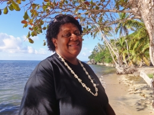

Fiji: Building resilience in the face of climate change
Increasingly severe weather patterns and rising sea levels have seen Fiji become the first country in the Pacific to relocate communities because of climate change.
Joana Tuisowaqa has lived in Narikoso village on Ono Island for 25 years. She says that, in the past five years, there has been a significant increase in the number of floods affecting her community.
“We asked for help from the government because water was coming right into the village and most houses were underwater during really high tides and storms,” she says. “People are scared and worried, but they can’t do much about it – they just live with it and know that moving is the only option.”
To the north of the small village of 70 people, ledges have been carved out of the hillside by army engineers. The new elevated site, a few hundred metres inland, is where the community will eventually relocate.
The Narikoso village relocation is supported by the Government of Fiji and a climate change programme run jointly by the Secretariat of the Pacific Community and the German group GIZ. A series of community consultations have been held to ensure all villagers understand the process.
Vunidogoloa: the first village to relocate
For the villagers of Vunidogoloa on Vanua Levu, nearly 280 km north of Narikoso, relocation has loomed as a reality for more than 30 years. In February 2014 the village was the first in Fiji to relocate, shifting two kilometres inland after years of coastal erosion and flooding had made their homes inhospitable.
The head of the village, Sailosi Ramatu, says the move was the culmination of a process spanning several decades.
“It was a very emotional period for us as there was a lot of waiting, insecurity, and questioning.”
The Government confirmed the village would be relocated in 2006, but the relocation site was only selected in 2012, following years of consultation and discussion.
“It was not easy for the village community to relocate,” Sailosi explains. “This was especially true for older people that had lived in the village all their life, because the land is part of their culture and identity.”
Land linked to cultural heritage and identity
In Fiji there is a strong cultural connection to land that is closely tied to heritage and identity. The Pacific Conference of Churches (PCC) has been working with villagers to help them deal with the loss of their homelands.
“Because faith is such a large part of people’s lives in the Pacific, the church is well placed to assist communities in dealing with climate change challenges,” said Julia Edwards from PCC. “We offer accompaniment to affected communities and support to church leaders in dealing with the impacts."
With a membership of 6.5 million people across the region, the PCC is also working with governments, civil society and regional organizations to develop a regional framework to protect Pacific Islanders displaced by climate change.
Small islands most vulnerable to climate change
According to Intergovernmental Panel on Climate Change (IPCC), sea levels are expected to rise between 28 to 61 cm by 2100, with tropical storms and cyclones to become more frequent and intense.
With no criteria for small island developing states on when to abandon homes and relocate, Fiji is leading the way in the development of relocation guidelines. Over the coming decade, the Government intends to move more affected villages and has even offered to resettle other low-lying Pacific nations.
“Relocations are a last resort and just one part of disaster risk reduction and climate change adaptation strategies to reduce the vulnerability and enhance the resilience of communities,” said Manasa Tagicakabau, Director of Fiji’s National Disaster Management Office. “The lessons learnt from the first successful relocations of Vunidogoloa and Narikoso villages can be applied to other relocation projects in Fiji and the region.”
Human displacement will rise globally
In a 2014 report, IPCC said that human displacement is expected to rise globally in coming decades as a consequence of climate change. While most displacement will likely occur inside countries, some people will seek protection and refuge abroad.
At present there are no provisions under international humanitarian law for people displaced by natural disasters or the effects of climate change to legally enter another country for protection and assistance. The Swiss and Norwegian-led Nansen Initiative is looking to address this gap.
The Nansen Initiative has been holding regional consultations with island states and regional civil-society organizations in the Pacific, as well as in South-East Asia, the Horn of Africa and Central America. Hannah Entwisle Chapuisat of the Nansen Initiative says the results of the consultations will be consolidated and discussed at a global inter-governmental meeting in 2015.
“We want to develop and build consensus on a protection agenda for people displaced by disasters and the effects of climate change,” she says. “It will be an action plan of what to do next and how to address current gaps. This includes looking at gaps in international law, addressing relocation, migration as adaptation and cross-border displacement, and sharing best practices from countries already dealing with these issues.”
“To fail to plan is to plan to fail”
Pacific consultations have stressed the importance of mitigating global greenhouse gas emissions and developing adaptation measures to prevent displacement and relocation. Recommendations from a regional inter-governmental consultation in the Cook Islands in 2013 and a civil society consultation in Fiji in 2014 included integrating human mobility issues within relevant national and regional laws and policies. They also recommended developing appropriate legal frameworks to address the protection needs of displaced populations.
For Hannah, the approach is simple: “We should do our utmost to build resilience and allow people to stay in their homes, but the risk of displacement and relocation is a Pacific reality. We must also have capacity to plan for and respond when movement is unavoidable.”
She is reminded of the words of the Hon. Henry Puna, Prime Minister of the Cook Islands, who concluded the consultation in Rarotonga with: “To fail to plan is to plan to fail”.

{kind=link}